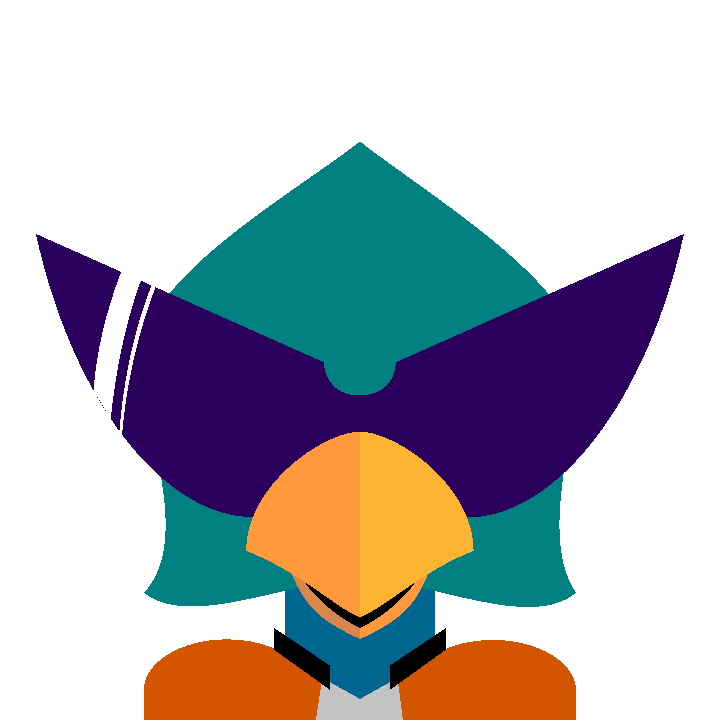
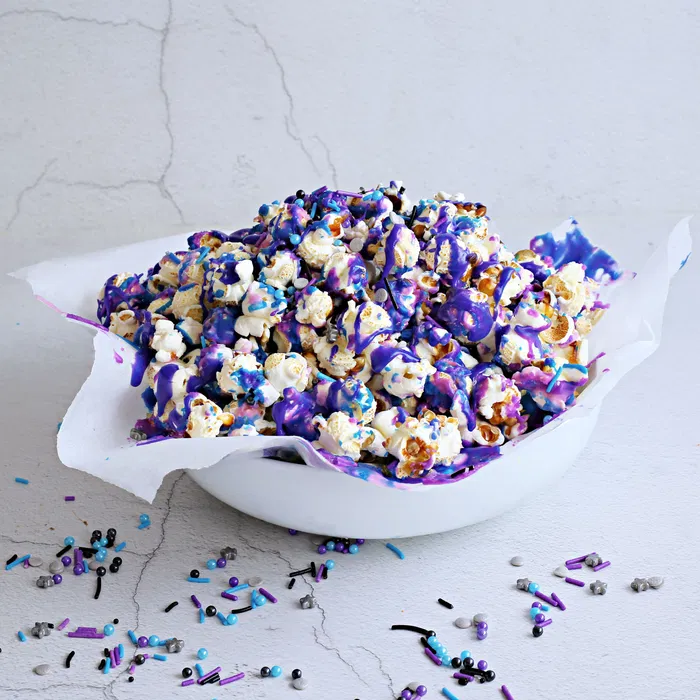

I am Eeya, commonly referred to as the Enraged Alien Avian! I was asked to share some of my favorite foods from around the galaxy! I chose three of my favorite meals before I realized you probably won't have the ingredients for them on earth. Luckily, I have human chef friend who has provided some subsitutions!
